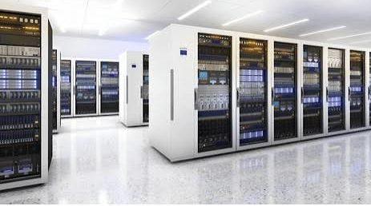
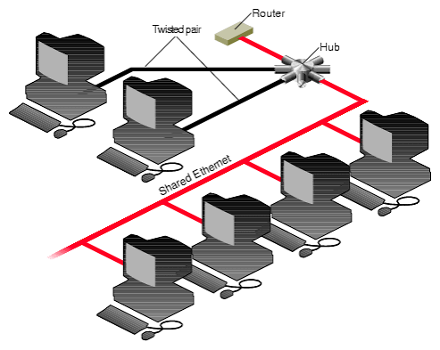

Elige entre la sala de servidores 3D estructurada por plantas o la topología de red avanzada.

Visualiza los dispositivos organizados en las 5 zonas de rack con estado LED y detalle en burbuja.

Explora el mapa de nodos interconectados, subredes y enlaces troncales del sistema.